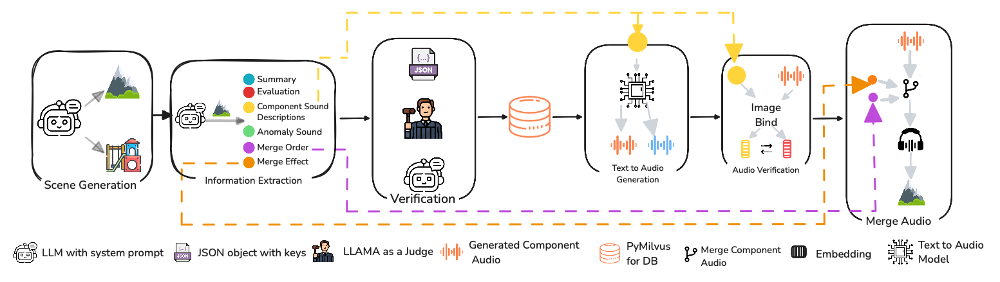
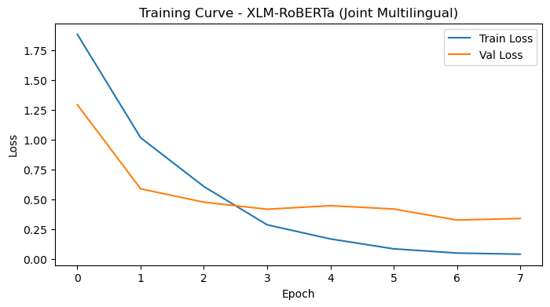
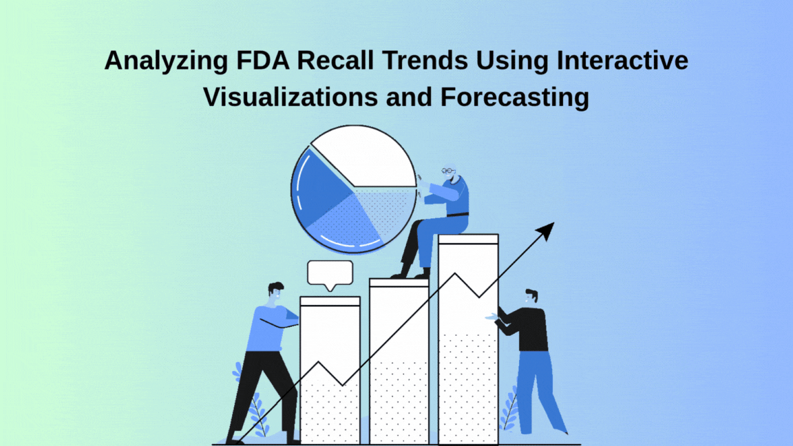
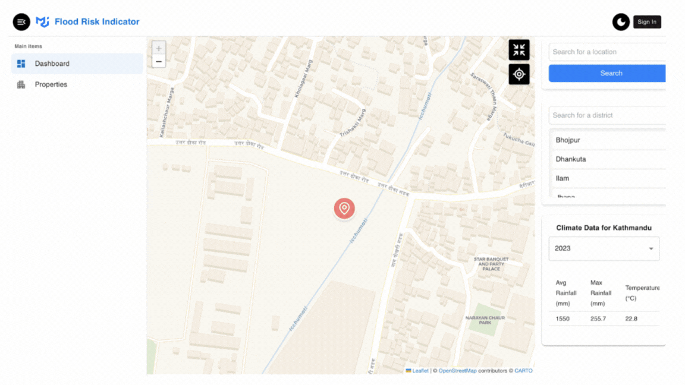

Projects
Projects & Creations

Research Publication
Audio Anomaly Data Generation
Designed and implemented a novel audio generation framework (AADG) leveraging large language models and text-to-audio pipelines to simulate realistic environmental scenarios for audio anomaly detection and localization. Led the expansion of training datasets beyond industrial settings, enabling model generalization to diverse, real-world audio domains such as telephony and multimedia. Built a modular, scalable system with rigorous validation workflows, significantly enhancing the robustness of anomaly detection models under out-of-distribution conditions. Published at SynthData @ ICLR 2025.

ML Research
Multilingual LLM Safety Classifier
Built a multilingual safety classifier to detect adversarial and jailbreak prompts across English, Greek, French, and Arabic by extending HarmBench Behaviors dataset to 1,600 labeled prompts. Defined a 7-class harm taxonomy and fine-tuned XLM-RoBERTa-base with cross-lingual training, achieving 0.922 weighted-F1. Implemented robust preprocessing, stratified splits, and class-imbalance handling. Benchmarked Gemma 3 for zero-shot/few-shot safety classification and analyzed per-class failure modes and out-of-distribution robustness limitations.
Flutter App
ECOBYTES
Plant species identification app using a Capsule Network achieving 99% accuracy. Real-time image recognition pipeline drove a 50% increase in user engagement.

Common
FDA Recall Trends Analysis
Led the end-to-end development of a robust analytical framework for processing and interpreting 96,000+ FDA recall records, uncovering significant temporal and categorical risk patterns with direct implications for public health strategy. Designed and built interactive Altair dashboards that enabled stakeholders to dynamically explore recall severity and product-specific trends, shaping priorities for future risk monitoring and predictive modeling efforts.

Common
Flood Data Dashboard
A flood-aware real estate assessment platform designed for Nepal, integrating geospatial and hydrological data to identify flood-prone zones and inform safer property decisions. The system enables users to browse, list, and evaluate properties with flood risk scores derived from climate, drainage, and urbanization data. Featuring a dual user model (owners and guests), it supports informed housing choices while promoting disaster resilience and sustainable urban development.
Common
Boston Crime Analysis
Neural network model predicting crime patterns from multiple data sources, achieving 95% accuracy. Includes rich visual analytics.

Common
Cozy Todo App
Engineered the full-stack user authentication system, including secure login, registration, and email verification workflows. Integrated bcrypt for password hashing and configured sandbox email delivery through MailTrap to ensure safe and testable user communication. Built a comprehensive admin panel enabling privileged access to user account management, progress monitoring, and level editing capabilities. Ensured data integrity and access control across key workflows, contributing to both usability and security of the platform.
Common
Data Distillation
Stratified sampling on Variance Decomposition matrices to reduce US ACS PUMS dataset sizes by 60% while preserving statistical integrity.
Common
Speech-to-Text via LSTM
CNN + 3-layer LSTM model with Mel spectrograms, CTC loss, and beam-search decoding on the Wall Street Journal dataset. Achieved Levenshtein distance of 8.92.
Common
Face Classification & Verification
CNN + ResNet-34 achieving 90% classification accuracy. Cosine-similarity embedding approach for face verification reaching 92% accuracy.
Common
Mechanical Ventilator Mode Detection
Random Forest classifier for detecting ventilator modes from respiratory waveform data, achieving 97.43% accuracy.